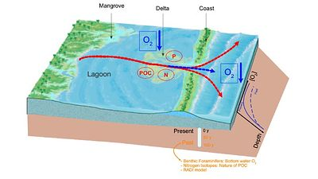
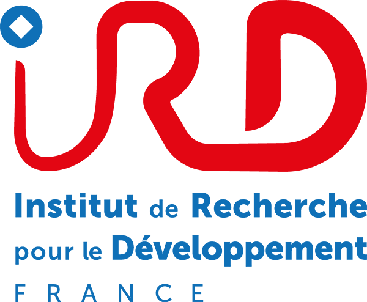

MANGO
Mangrove Influence on Lagoon Eutrophication and Coastal Deoxygenation in Senegal

Coastal marine ecosystems in tropical regions are increasingly threatened by climate change and human activities. Rising temperatures and enhanced microbial respiration intensify water column stratification, leading to progressive subsurface deoxygenation. This not only disrupts biogeochemical cycles but also endangers biodiversity and fishery resources that are vital for local communities.
In Senegal, the spread of anoxic zones is particularly pronounced near mangrove-fringed lagoons. The combination of organic matter inputs from mangroves and climate-driven deoxygenation is altering coastal biogeochemistry, potentially degrading fisheries and impacting the regional economy. Yet, the mechanisms driving these changes remain poorly understood.
Objectives
MANGO aims to clarify the role of mangroves in coastal eutrophication and deoxygenation in Senegal by reconstructing oxygenation trends over the past century and disentangling the respective influences of oceanic changes and local mangrove dynamics. The project seeks to answer 2 key questions:
- How has coastal oxygenation evolved over the past 100 years?
- What proportion of this evolution is attributable to oceanic drivers versus mangrove-related processes?
Approach
MANGO employs an integrated, multidisciplinary strategy:
- Fieldwork & Sampling: Sediment cores and surface samples will be collected from two key lagoon outlets (Mbodiène and Joal-Fadiouth) to reconstruct long-term oxygenation patterns.
- Biogeochemical Analyses: In-situ measurements (oxygen, pH, temperature) will be complemented by stable isotope (δ¹³C, δ¹⁵N) analysis to trace organic matter sources and denitrification processes.
- Benthic Foraminifera Study: These micro-organisms, sensitive to oxygen levels, will serve as bioindicators. Identification and quantification will be automated using a low-cost imaging system (SASHIMI) enhanced with AI-based morphometric analysis.
- Sediment Modeling: A calibrated diagenetic model (RADI) will simulate oxygen gradients and dominant processes (organic matter degradation, mangrove inputs, mineral precipitation), enabling future projections.
Expected Impact
MANGO will enhance understanding of the biogeochemical processes shaping Senegal's coastal ecosystems and inform:
- Sustainable fisheries management strategies
- Capacity building in micropaleontology and environmental modeling
- Scientific collaboration between Global South and North institutions
The project aligns with the priorities of LMI ECLAIRS 2 and Institut de Recherche pour le Développement (IRD) initiatives for sustainable science and climate resilience.
Funded and hosted by
